Show other papers
A sharp gradient-corrected Lieb--Thirring inequality in one dimension with applications to density functional theory
Authors: Thiago Carvalho Corso, Louis Garrigue
Type: theory · Category: strongly correlated electrons · PDF: https://arxiv.org/pdf/2610.30887v1
Analysis basis: full PDF text, analyzed in chunks
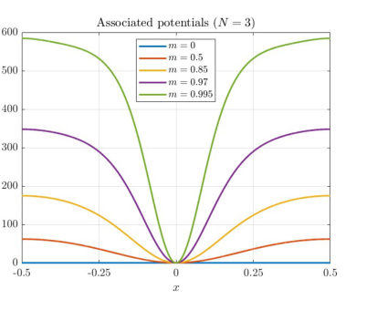
Summary. This paper develops sharp, gradient-corrected Lieb-Thirring inequalities in one dimension and applies them to rigorously analyze the Thomas-Fermi-von Weizsäcker (TFW) approximation in DFT. The main achievement is establishing precise error bounds that show the TFW approximation is exact on specific optimal density manifolds, confirming the convergence rate of the Kohn-Sham potential in the high-density limit.
Why it may be interesting. This work provides highly rigorous mathematical justifications for approximations used in DFT, which is a cornerstone theory for understanding electronic structure in materials and molecules, connecting fundamental inequalities to practical computational methods.
Detailed structure
Main problem. To derive sharp, gradient-corrected Lieb-Thirring inequalities in one dimension and apply these results to rigorously analyze the Thomas-Fermi-von Weizsäcker (TFW) approximation in Density Functional Theory (DFT).
Main result. The paper establishes sharp inequalities and derives non-asymptotic error bounds showing that the TFW approximation is exact on the Poincaré density manifold, leading to an optimal $N^{-2}$ convergence rate for the Kohn-Sham potential in the high-density limit.
Method. The work uses advanced mathematical techniques involving functional analysis, spectral theory (Lieb-Thirring inequalities), and rigorous error estimation based on Poincaré deficits.
Model / system. The study concerns the electronic structure of quantum systems modeled by DFT in one dimension, using density profiles ($ ho$) and single-particle density matrices ($\gamma$). The analysis compares the exact kinetic energy functional with the TFW approximation.
Key observables. Kinetic energy functional ($T[\gamma]$), gradient correction term ($G( ho)$), Poincaré deficit ($\delta_P( ho)$), and the difference between the Kohn-Sham and TFW potentials.
Important parameters / regimes. Number of particles ($N$), dimensionality (one dimension, $\mathbb{R}$ or Torus $\mathbb{T}$), and the distance of the density profile from the Poincaré manifold.
Assumptions / limitations. The analysis relies on establishing sharp inequalities and assuming the existence of specific optimizing density profiles that define the Poincaré manifold.
Figures summary. Not specified in the provided notes, but Figure 1 is mentioned to show density profiles and Kohn-Sham potentials for $N=3$ in the torus case.
Paper structure. The paper progresses by first proving sharp, gradient-corrected Lieb-Thirring inequalities in 1D (on $\mathbb{R}$ and $\mathbb{T}$). It then applies these results to derive rigorous, non-asymptotic error bounds for the TFW approximation, culminating in the proof of the optimal $N^{-2}$ convergence rate for the Kohn-Sham potential.
Abstract
We first prove a sharp Lieb-Thirring inequality with semi-classical constant and gradient correction in one dimension. In the periodic setting, the corresponding inequality also includes a parity dependent shell-correction term, which appears to be new. Moreover, we also characterize the optimizers of these inequalities. In particular, the optimizing density profiles form a two-dimensional manifold, which we call here the Poincaré density manifold. We then apply these results to study the Thomas--Fermi--von Weizsäcker (TFW) approximation of the kinetic energy in Density Functional Theory. More precisely, we first obtain an explicit and non-asymptotic bound on the global and local error made by the TFW approximation. These bounds are controlled by the distance of the normalized density profile from the Poincaré density manifold times the number of particles. In particular, these bounds show that the TFW approximation is exact on the Poincaré manifold. We then show that, in the periodic setting, the distance between the Kohn-Sham potential and the inverse TFW potential in the natural dual Sobolev space can also be controlled by explicit density dependent constants times the distance to the Poincaré manifold. As a corollary, we prove that for a fixed density profile, the Kohn-Sham potential converges towards the inverse Thomas--Fermi potential in the high-density limit $N \rightarrow \infty$ with asymptotic rate of order $N^{-2}$. This rate is shown to be optimal.
A simple proof of unitary parallelization via port-based teleportation
Authors: Anurag Anshu, Quynh T. Nguyen
Type: theory · Category: quantum information and computing · PDF: https://arxiv.org/pdf/2610.30761v1
Analysis basis: full PDF text, analyzed in chunks
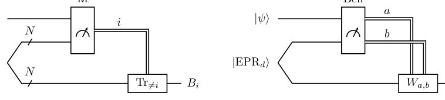
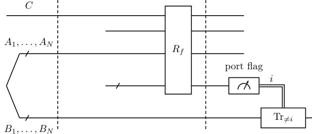
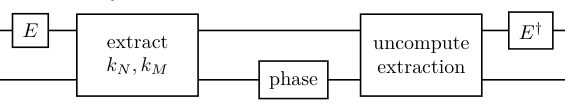
Summary. This paper presents an elementary circuit construction for Port-based teleportation (PBT), a quantum communication protocol. By efficiently implementing the necessary reflection operator, the authors prove a simple and direct circuit-depth proof that any $n$-qubit unitary operation can be realized with polynomial depth. This advances the understanding of quantum circuit complexity.
Why it may be interesting. This work provides a fundamental circuit-level understanding of quantum parallelism, directly impacting the theoretical limits of quantum computation depth for universal gates.
Detailed structure
Main problem. To provide a simple, elementary circuit proof that all $n$-qubit unitaries can be parallelized to polynomial depth.
Main result. The authors show that Port-based teleportation (PBT) can be implemented with polylogarithmic depth, leading to the conclusion that arbitrary $n$-qubit unitaries can be synthesized with depth $ ext{poly}(n, \log(1/\epsilon))$.
Method. The proof connects PBT to the implementation of a reflection operator $R_f$, which is constructed by decomposing an operator $S_f$ into a sum of swap operators and estimating necessary eigenvalues using random SWAP tests.
Model / system. The work analyzes Port-based teleportation (PBT), a quantum teleportation variant using $N$ shared EPR states, and relies on implementing complex quantum operations like reflections and permutations using elementary quantum circuits.
Key observables. Diamond-norm error ($\delta$), circuit depth ($ ext{polylog}(N, d)$), and the ability to realize arbitrary $n$-qubit unitaries.
Important parameters / regimes. Number of shared states ($N$), qudit dimension ($d$), and the desired error tolerance ($\epsilon$ or $\delta$).
Assumptions / limitations. The derivation assumes the availability of efficient quantum circuits for arithmetic operations, permutation calculations, and eigenvalue estimation via random SWAP tests.
Figures summary. Figure 1 contrasts PBT with standard teleportation. Figure 2 illustrates the state mapping via the reflection $R_f$. Figure 3 details the circuit for $R_f$, showing the sequence of eigenvalue extraction and uncomputation.
Paper structure. The paper first establishes the connection between PBT and the reflection operator $R_f$. It then focuses on decomposing $S_f$ into swaps and implementing $R_f$ using polylogarithmic depth techniques (including eigenvalue estimation). Finally, it applies this to prove the general unitary parallelization result.
Abstract
Port-based teleportation (PBT) is a variant of quantum teleportation that does not require corrections on the teleported state: starting with $N$ shared EPR states, Alice can teleport a qudit to Bob by performing a measurement on her system and informing Bob which of his $N$ `ports' to retrieve the state, up to infidelity decaying with $N$. Existing quantum circuits of PBT rely on representation theory tools and the mixed Schur transform. In this note, we report an elementary efficient circuit for PBT, which has depth $\operatorname{polylog}(N,d)$. As a corollary, this gives a simple proof that all $n$-qubit unitaries can be parallelized to $\operatorname{poly}(n)$ depth, recovering a recent result due to Nehoran--Slote--Yuen and OpenAI.
Anisotropic thermoelectric transport in the Sr2RuO4-Ru eutectic system
Authors: Takeru Ito, Shogo Yoshida, Hiroshi Yaguchi, Ryuji Okazaki
Type: both · Category: strongly correlated electrons · PDF: https://arxiv.org/pdf/2610.30547v1
Analysis basis: full PDF text, analyzed in chunks
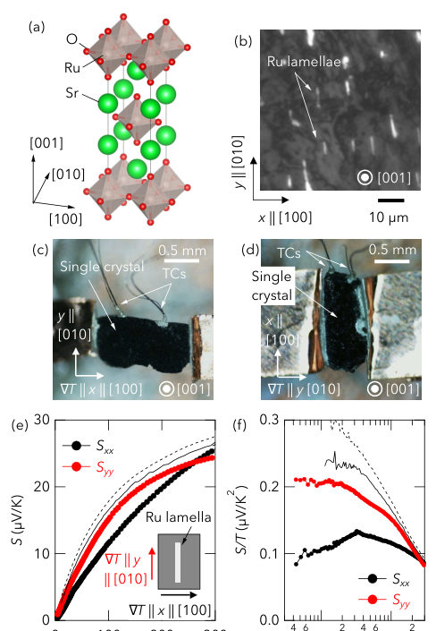
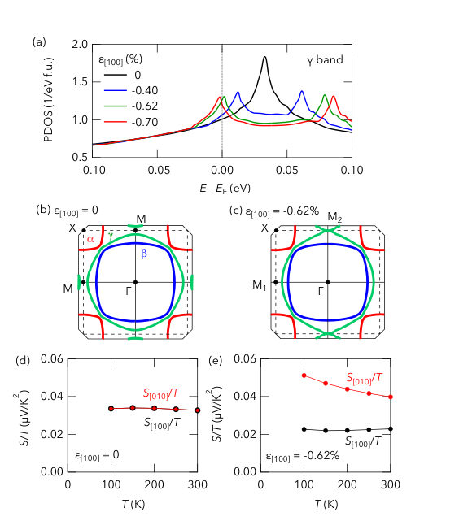
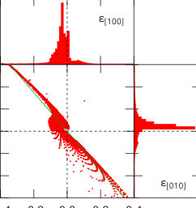
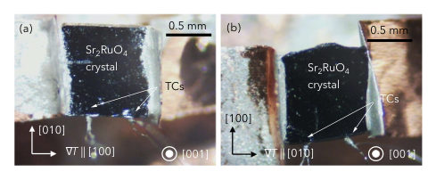
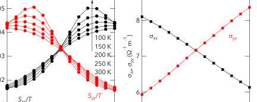
Summary. This work investigates the anisotropic thermoelectric transport in a $ ext{Sr}_2 ext{RuO}_4$-Ru eutectic system. By combining experimental thermopower measurements with sophisticated DFT and FEM simulations, the authors demonstrate that the observed anisotropy is strongly governed by strain gradients arising from the lattice mismatch between the two components. This highlights strain as a critical tuning parameter for the electronic structure and transport properties of correlated oxides.
Why it may be interesting. The study links macroscopic transport properties (thermoelectric response) directly to microscopic structural details (interfacial strain) in a correlated material system, providing a strain-sensitive probe for understanding superconducting mechanisms.
Detailed structure
Main problem. To understand the origin of the enhanced superconducting onset temperature in the $ ext{Sr}_2 ext{RuO}_4$-Ru eutectic system by investigating its anisotropic thermoelectric response in the normal state.
Main result. The pronounced anisotropy in thermopower is attributed to strain-induced modifications of the $ ext{Sr}_2 ext{RuO}_4$ electronic structure near the interfaces, which is best captured by modeling the inhomogeneous strain field from the eutectic structure.
Method. The study combines in-plane thermoelectric measurements (thermopower) with advanced computational modeling, including DFT calculations and Finite-Element Modeling (FEM) to simulate local strain distributions.
Model / system. The physical system is the $ ext{Sr}_2 ext{RuO}_4$-Ru eutectic, where metallic Ru inclusions are embedded in the $ ext{Sr}_2 ext{RuO}_4$ matrix. The analysis models the strain mismatch and its effect on electronic transport coefficients.
Key observables. In-plane thermopower ($S$) measured parallel and perpendicular to the Ru lamellae, and the resulting thermopower anisotropy ($S_{yy}/S_{xx}$).
Important parameters / regimes. Temperature (especially near the 3-K phase), strain components ($\varepsilon[100]$, $\varepsilon[010]$), and the geometry/area fraction of the Ru inclusions.
Assumptions / limitations. The analysis assumes that the strain field generated by thermal expansion mismatch is the dominant source of anisotropy, although contributions from phase mixing and 3D connectivity are noted as possible limitations.
Figures summary. Figures show temperature dependence of measured thermopower vs. calculations under uniform strain, and FEM contour plots illustrating the inhomogeneous strain field generated by the Ru inclusions, comparing calculated anisotropy ratios to experiment.
Paper structure. The paper proceeds by first presenting experimental measurements of anisotropic thermopower in the eutectic system. It then develops theoretical models, starting with uniform strain calculations, progressing to complex FEM simulations incorporating inhomogeneous strain fields, and finally comparing the resulting anisotropic transport coefficients to the experimental data.
Abstract
The Sr2RuO4-Ru eutectic system, in which metallic Ru inclusions are embedded in a Sr2RuO4 matrix, exhibits an enhanced superconducting onset temperature of about 3 K, known as the 3-K phase. Here we investigate the in-plane thermoelectric response of this eutectic system in the normal state and find a pronounced anisotropy in the thermopower for thermal gradients applied parallel and perpendicular to the Ru lamellae. To clarify its origin, we combine thermopower measurements with electronic-structure-based transport calculations and finite-element modeling of the local strain distribution generated by the thermal-expansion mismatch between Sr2RuO4 and Ru. The calculations show that uniaxial compression of Sr2RuO4 produces a sizable thermopower anisotropy through modification of the Fermi surfaces. When an idealized spatially inhomogeneous strain field around the Ru lamellae is included, the observed sign and qualitative magnitude of the anisotropy are reproduced more closely than in a simple unstrained two-component model. These results are consistent with a substantial contribution from strain-induced changes in the Sr2RuO4 electronic structure near the interfaces, although contributions from interfacial phase mixing and three-dimensional transport connectivity cannot be excluded.
Atomic limits of empirical measures of interacting particle systems with self-duality
Authors: Mario Ayala, Nicolas Dirr, Johannes Zimmer
Type: theory · Category: statistical mechanics · PDF: https://arxiv.org/pdf/2610.31319v1
Analysis basis: full PDF text, analyzed in chunks
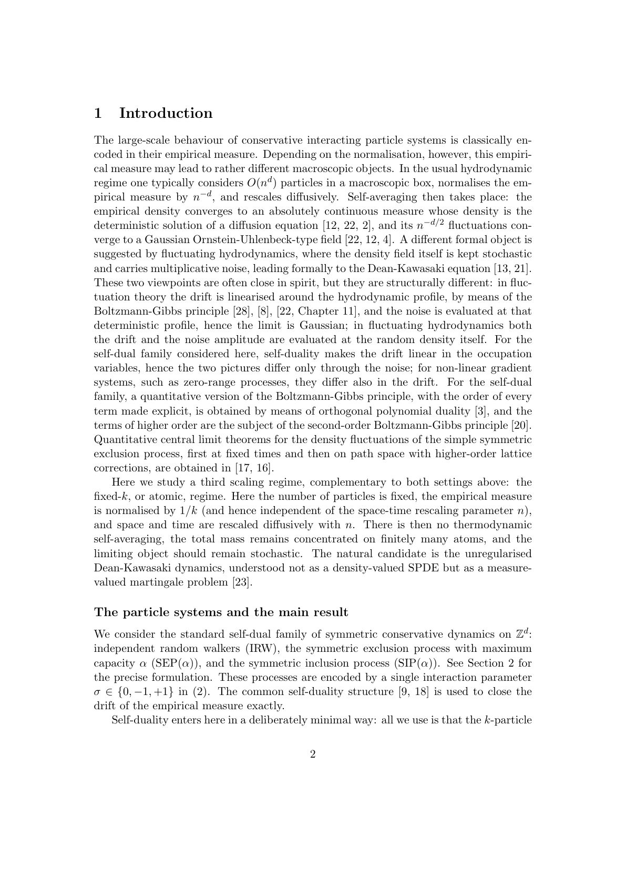
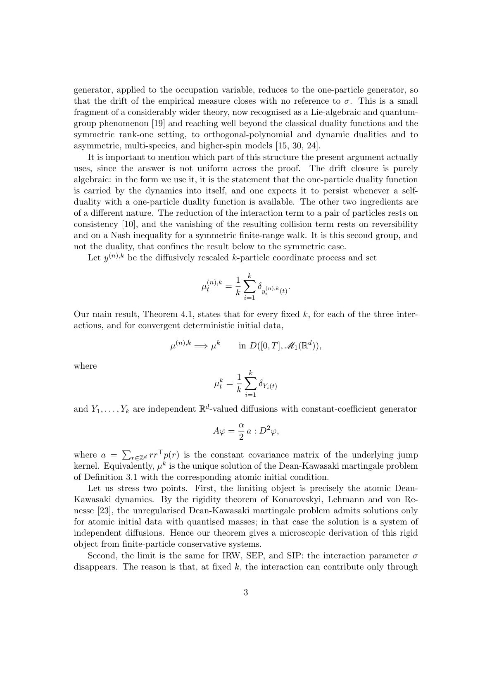
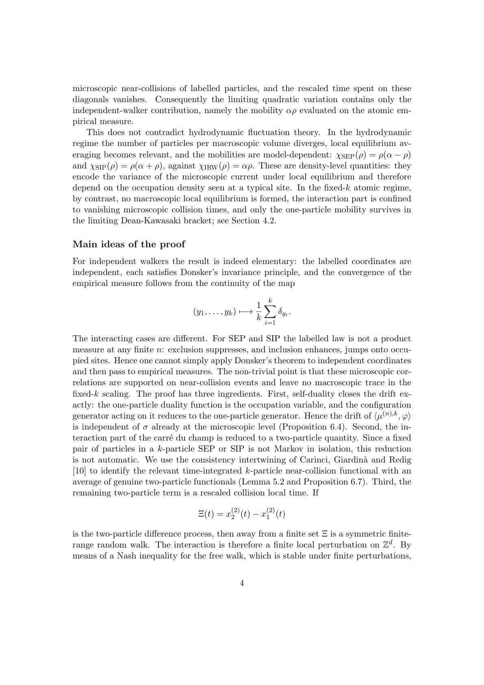
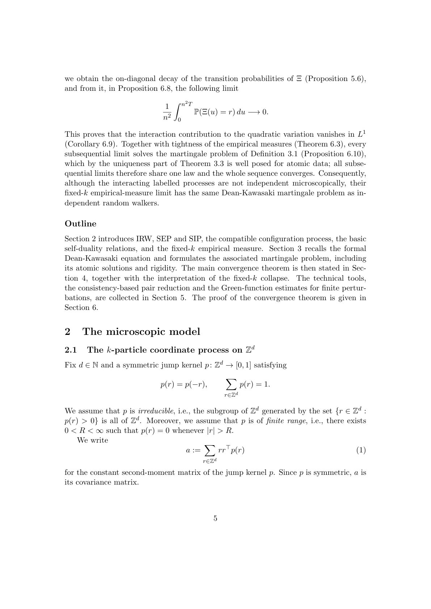
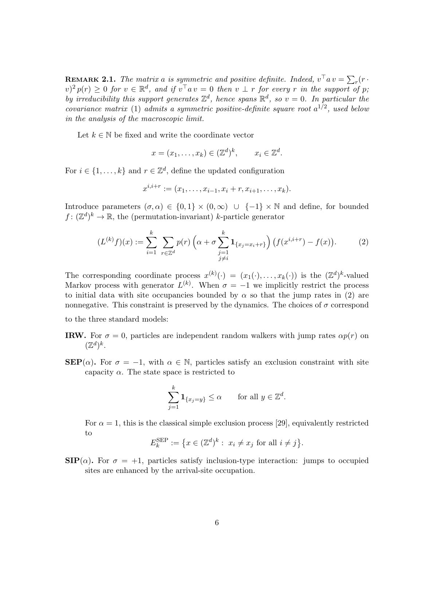
Summary. This work analyzes the long-time behavior of interacting particle systems (like exclusion processes) in a fixed-particle limit. The authors prove that the empirical measure converges to a simple, non-interacting Gaussian process, showing that particle interactions only contribute through vanishing near-collision terms at this specific scaling. This result unifies the mathematical description of several key models under a single, simple limiting process.
Why it may be interesting. The vanishing of interaction effects in the fixed-$k$ limit provides a powerful, non-trivial result contrasting with standard mean-field or hydrodynamic descriptions of interacting quantum/classical systems.
Detailed structure
Main problem. The paper investigates the fixed-particle limit of empirical measures for a unified family of conservative interacting particle systems.
Main result. The limit measure converges to an atomic empirical measure carried by $k$ independent diffusions, demonstrating that interaction effects vanish in this fixed-$k$ scaling regime.
Method. The proof combines the use of self-duality identities, consistency arguments reducing the problem to two particles, and Green-function estimates to show the vanishing of interaction terms.
Model / system. The study covers a self-dual family of symmetric conservative dynamics on the lattice $\mathbb{Z}^d$: Independent Random Walkers (IRW), the Symmetric Exclusion Process (SEP), and the Symmetric Inclusion Process (SIP).
Key observables. The normalized empirical measure $\mu^{(n)}_k(t) = \frac{1}{k} \sum_{i=1}^k \delta_{y^{(n)}_{k,i}(t)}$ is the primary observable.
Important parameters / regimes. The analysis focuses on the fixed number of particles ($k$) limit, contrasting with the standard hydrodynamic limit (which involves density scaling).
Assumptions / limitations. The proof relies on the rigidity theorem of Konarovskyi, Lehmann, and von Reissner, and assumes the jump kernel has finite range.
Paper structure. The paper introduces the processes and self-duality (Section 2), formalizes the Dean-Kawasaki martingale problem (Section 3), and states the main convergence theorem (Section 4).
Abstract
We study the fixed-particle limit of empirical measures for a unified self-dual family of conservative particle systems on $\mathbb{Z}^d$: independent random walkers, the symmetric exclusion process, and the symmetric inclusion process. For a fixed number of particles $k$, under diffusive space-time scaling parametrised by $n$, we prove that as $n\to\infty$ the normalised empirical measure converges in $D([0,T],\mathcal{M}_1(\mathbb{R}^d))$ to an atomic empirical measure carried by $k$ independent diffusions, with constant covariance determined by the microscopic jump kernel. Equivalently, the limit is the unique atomic solution of the Dean-Kawasaki martingale problem with mass quantisation $1/k$. In particular, exclusion and inclusion have the same fixed-$k$ atomic limit as independent walkers: the interaction contributes only through microscopic near-collisions, whose rescaled occupation time vanishes. The proof combines self-duality, consistency-based reduction to two particles, and Green-function estimates for finite perturbations of symmetric random walks.
Automating quantum circuit optimization with AI agents
Authors: Marcos Crichigno, Steve Flammia
Type: theory · Category: quantum information and computing · PDF: https://arxiv.org/pdf/2610.31352v1
Analysis basis: full PDF text, analyzed in chunks
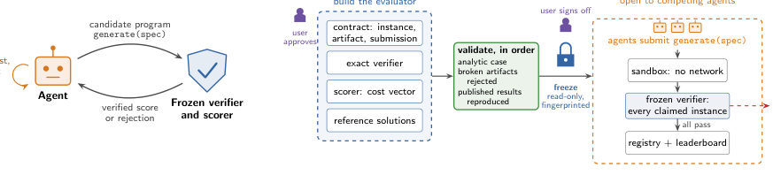
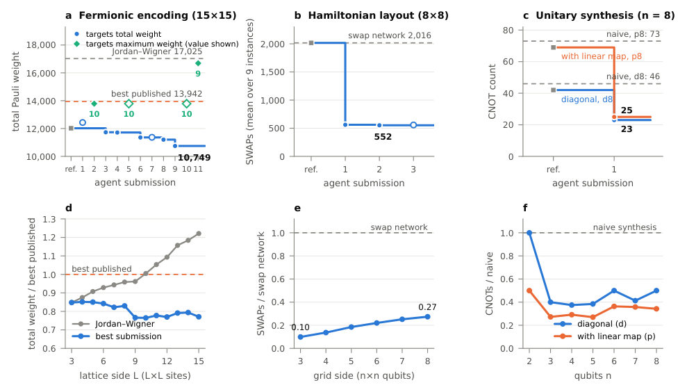
Summary. This paper presents a novel, general framework using AI agents to solve hard optimization problems in quantum circuit compilation, ensuring all results are mathematically certified. By applying this method to tasks like fermion encoding and unitary synthesis, the authors achieve significant performance improvements over state-of-the-art methods. This work opens the door for automated, trustworthy discovery across quantum algorithm design.
Why it may be interesting. The rigorous, certified nature of the optimization process, which builds upon established quantum simulation techniques, provides a powerful, general tool for designing complex quantum circuits.
Detailed structure
Main problem. The paper addresses the hard optimization problems inherent in compiling quantum algorithms for real hardware, which determines if an algorithm can scale.
Main result. The proposed AI agent framework substantially improved circuit optimization across three tasks—fermion-to-qubit encoding, Hamiltonian layout, and unitary synthesis—by up to 73% compared to prior methods.
Method. It introduces a general method using AI agents within a verifiable autoresearch loop, featuring a frozen, exact verifier to certify every proposed improvement.
Model / system. The work applies to quantum circuits, specifically optimizing encodings for quantum simulation (fermion-to-qubit) and finding minimal gate sequences for unitary synthesis using CNOT and Rz gates.
Key observables. Pauli weight (for encoding), SWAP count (for layout), and CNOT count (for synthesis).
Important parameters / regimes. The size of the system (e.g., lattice size $L$ or number of qubits $n \le 4$).
Assumptions / limitations. The method assumes that the optimization problem's solutions can be verified exactly and efficiently by a classical verifier.
Figures summary. Figure 1 illustrates the two components: the verified autoresearch loop and the challenge-construction system. Figure 2 summarizes results across the three compilation challenges. Other figures detail circuit walks and polynomial rewriting.
Paper structure. The paper first introduces the general framework (autoresearch loop + verifier). It then applies this framework to three specific compilation problems: fermion-to-qubit encoding, Hamiltonian layout, and unitary synthesis, detailing the optimization targets and results for each.
Abstract
Compiling quantum algorithms for real devices involves hard optimization problems that can decide whether an algorithm runs at scale. We present a general method for solving such problems with AI agents, with every result certified. It builds on autoresearch loops, in which agents iteratively improve programs against a fixed evaluator and which have recently improved quantum cryptanalysis circuits, and adds two elements: a frozen, exact verifier certifies every result, and this verifier, together with the challenge around it, is built by an agent that formulates the problem with a researcher and validates the verifier against a solved case, deliberately broken solutions and published results before any solution exists. The method applies to any optimization problem whose solutions can be verified exactly and efficiently. We apply it to three compilation problems in quantum simulation, namely fermion-to-qubit encoding, Hamiltonian layout and unitary synthesis. In each, the agents improved substantially on published or standard constructions, reducing the cost being optimized by up to 73% at the largest sizes tested and outperforming a state-of-the-art optimizer for fermion-to-qubit encodings. Every submission is a program accompanied by its agent's notes, so the ideas behind each improvement are recorded in human-readable form; later agents built on them, and we describe them here. These results open the way to automated, certified discovery across quantum circuit design and beyond.
Coherence and imaginarity of qubit states under vanishing Bargmann invariants
Authors: Hao-Fan Wang, Lin Chen
Type: theory · Category: quantum information and computing · PDF: https://arxiv.org/pdf/2610.30618v1
Analysis basis: full PDF text, analyzed in chunks
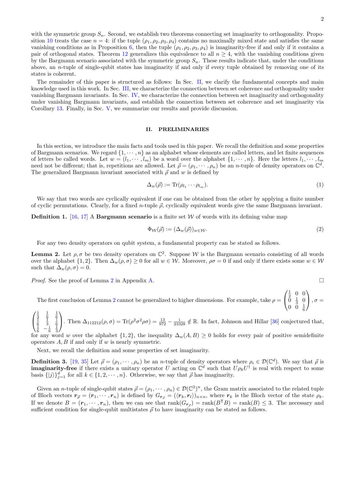
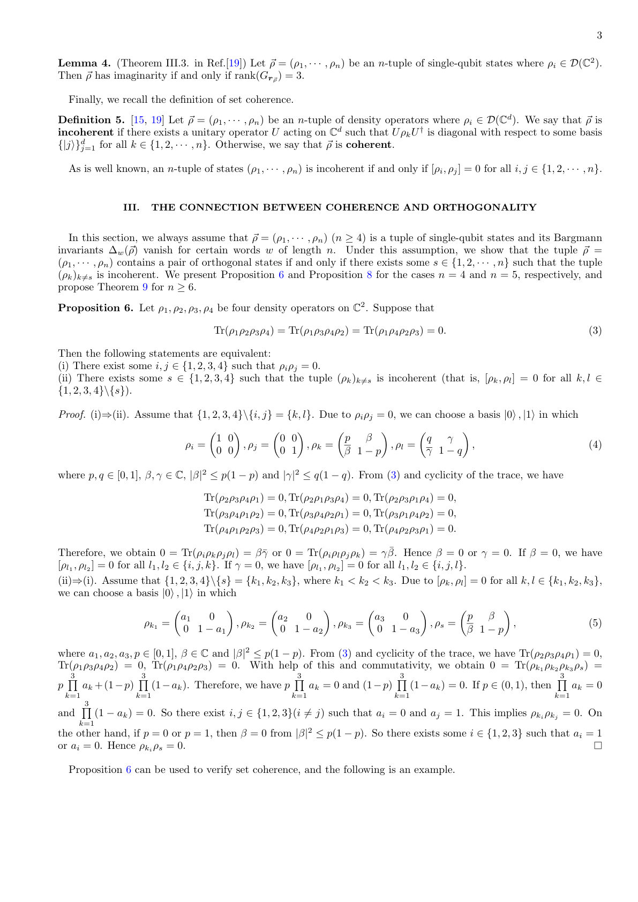
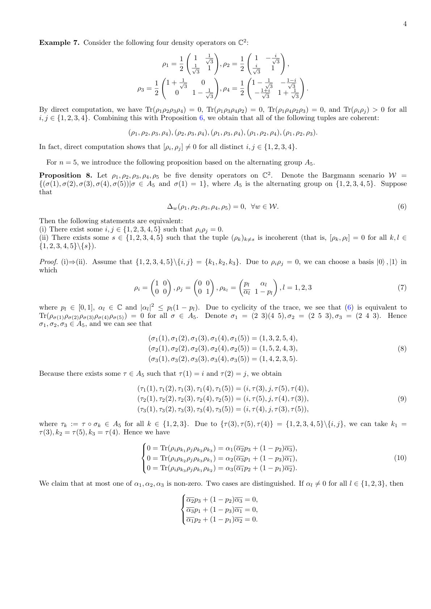
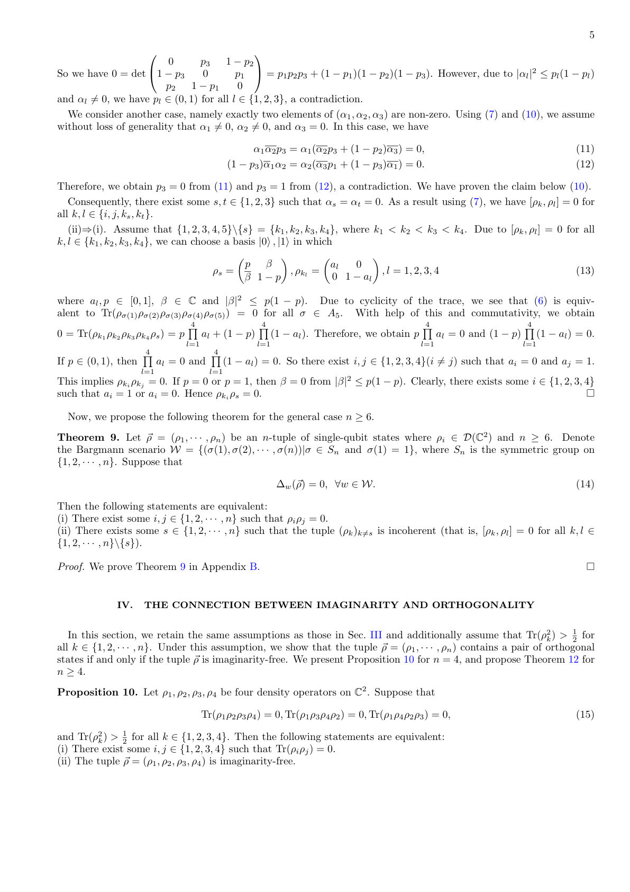
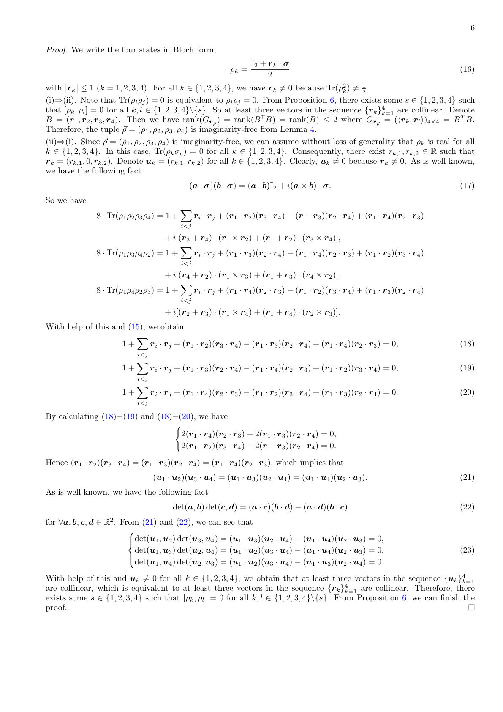
Summary. This theoretical paper establishes strong equivalences between set coherence, set imaginarity, and the presence of orthogonal pairs among a set of single-qubit states. These equivalences hold specifically when higher-order Bargmann invariants vanish. The findings provide a powerful diagnostic tool, linking abstract algebraic constraints on state products to fundamental geometric properties of the state set.
Why it may be interesting. This work provides powerful, necessary and sufficient conditions (based on simple geometric properties like orthogonality) for complex quantum resource measures (coherence/imaginarity) to vanish, which is crucial for understanding quantum state characterization.
Detailed structure
Main problem. The paper investigates the deep mathematical relationship between set coherence, set imaginarity, and the existence of orthogonal pairs among a set of single-qubit states.
Main result. Under the vanishing of higher-order Bargmann invariants, the set coherence and set imaginarity of the qubit states are equivalent to the existence of at least one pair of orthogonal states within the set.
Method. The analysis employs algebraic techniques involving the cyclicity of the trace, the Bloch vector representation, and inductive proofs based on the vanishing of multivariate traces (Bargmann invariants).
Model / system. The system under study consists of an $n$-tuple of single-qubit density operators ($ ho_i \in D(\mathbb{C}^2)$). The properties are analyzed using constraints derived from higher-order traces of these operators.
Key observables. Set coherence, set imaginarity, pairwise orthogonality ($ ext{Tr}( ho_i ho_j) = 0$), and higher-order Bargmann invariants ($\Delta_w(\vec{ ho})$).
Important parameters / regimes. The number of states $n$ (analyzed for $n \ge 4$), and the condition that maximally mixed states are excluded for imaginarity results.
Assumptions / limitations. The results rely heavily on the vanishing of specific higher-order traces (Bargmann invariants) and, for some theorems, the assumption that $ ext{Tr}( ho_k^2) > 1/2$.
Paper structure. The paper develops results by first establishing equivalences for set coherence (related to commutativity) and then for set imaginarity (related to real representations), culminating in a combined corollary showing the equivalence of all three conditions under the vanishing invariant constraints.
Abstract
Set coherence and set imaginarity are two important quantum resources defined by sets of states. We investigate tuples of qubit states under vanishing higher-order Bargmann invariants and show that their set coherence and set imaginarity are each related to whether they contain a pair of orthogonal states. Specifically, when the relevant higher-order Bargmann invariants vanish, the tuple contains a pair of orthogonal states if and only if removing some state makes the remaining tuple incoherent. Moreover, when maximally mixed states are excluded, the same vanishing conditions imply that the tuple is imaginarity-free if and only if it contains a pair of orthogonal states. As a consequence, under these conditions, a tuple of single-qubit states has imaginarity precisely when every tuple obtained by deleting one of its states is coherent.
Dealing with low-weight errors that lead BP OSD to fail
Authors: Giacomo Fregona, Matthias C. Löbl, Benjamin J. Brown, Michael J. Kastoryano, Stefano Paesani
Type: theory · Category: quantum information and computing · PDF: https://arxiv.org/pdf/2610.30305v1
Analysis basis: full PDF text, analyzed in chunks
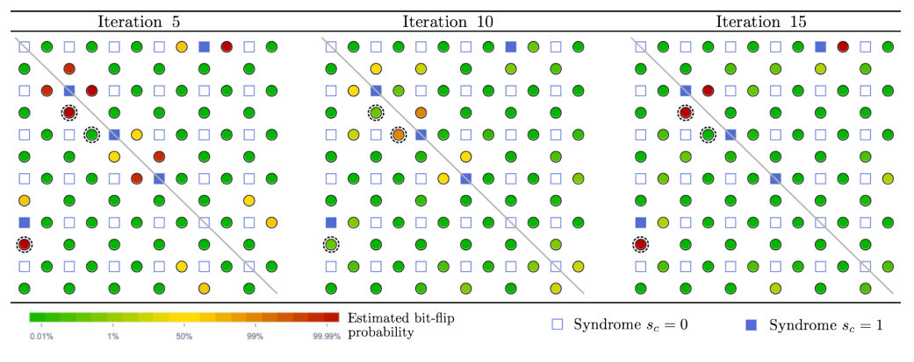
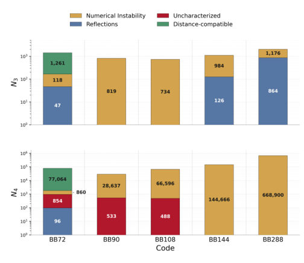
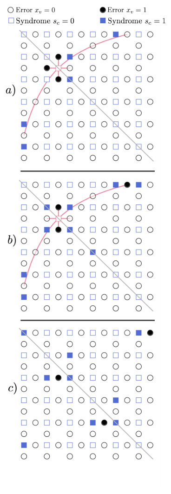
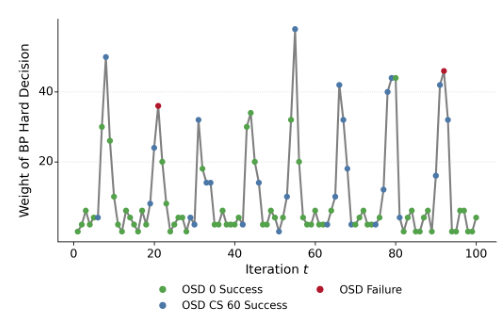
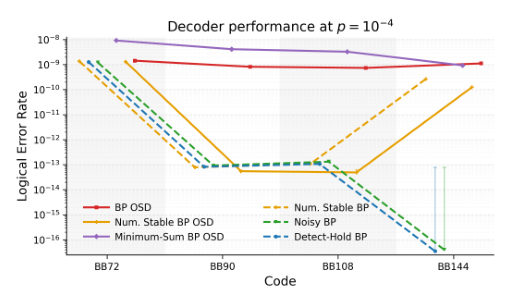
Summary. This paper analyzes why the widely used BP OSD decoder fails for quantum error correcting codes at low error rates. The failure is traced to global symmetries in the code's decoding graph, which cause the iterative BP process to fail on low-weight errors. The authors propose specific modifications to the BP update rules to overcome these symmetry-induced limitations, significantly improving the logical error rate.
Why it may be interesting. The work directly addresses the practical limitations of state-of-the-art quantum error correction decoding algorithms, providing insights into fundamental failure mechanisms (symmetries) that limit achievable error rates.
Detailed structure
Main problem. The paper investigates the failure modes of the Belief Propagation combined with Ordered Statistics Decoding (BP OSD) decoder when applied to Quantum Low Density Parity Check (QLDPC) codes.
Main result. Failure occurs due to low-weight errors stemming from global symmetries (reflections) in the decoding graph, which prevent parallel BP convergence, leading to error floors.
Method. The authors perform theoretical analysis and exhaustive numerical simulations, proposing modifications to the BP update rules to mitigate these symmetry-induced failures.
Model / system. The study focuses on Quantum CSS codes, specifically using Bivariate Bicycle (BB) codes, which are defined by their underlying algebraic structure and associated Tanner graphs.
Key observables. Logical error rate (LER) as a function of physical error rate, and the weight of the error configurations causing failure.
Important parameters / regimes. Low physical error rates (e.g., $p=10^{-4}$), code parameters ($l, m$), and the error weight relative to $d/2$.
Assumptions / limitations. BP OSD is used as the primary decoding tool, which is itself an approximation of the optimal Minimum Likelihood Decoder (MLC).
Figures summary. Figure 5 compares the logical error rates of various BP-based decoders (with and without OSD post-processing) across different BB codes, highlighting performance degradation due to symmetries.
Paper structure. The paper first reviews the theoretical background of QLDPC codes and BP decoding, then analyzes the failure mechanism related to graph symmetries (reflections) in specific code families like BB codes, and finally proposes and tests modified BP update rules to improve performance.
Abstract
Belief Propagation combined with Ordered Statistics Decoding (BP OSD) is an open-source decoding tool used widely within the community due to its versatility and ease of application to Quantum Low Density Parity Check (QLDPC) codes. However, the degeneracy of quantum codes has been observed to degrade the performance of BP OSD, particularly leading to error floors for low physical error rates. Here, we investigate the low-weight error configurations responsible for such failures in Bivariate Bicycle codes. We show that, at code capacity, BP OSD fails on errors whose weight is significantly smaller than d/2, arising from global symmetries of the decoding graph that prevent the convergence of parallel BP. Furthermore, our analysis reveals new pitfalls that can arise when analysing the performance of BP OSD in the rare events regime, such as loss of ergodicity in splitting methods and numerical instabilities in the decoder. We show how to mitigate these failure mechanisms by modifying the BP update rules and the decoder implementation, leading to substantial improvement in logical error rate.
Emergent altermagnetism in (LaVO$_3$)$_n$/(LaNiO$_3$)$_m$ superlattices from interfacial charge transfer and octahedral tilts
Authors: Gustavo H. Cassemiro, Walber H. Brito
Type: theory · Category: strongly correlated electrons · PDF: https://arxiv.org/pdf/2610.30371v1
Analysis basis: full PDF text, analyzed in chunks
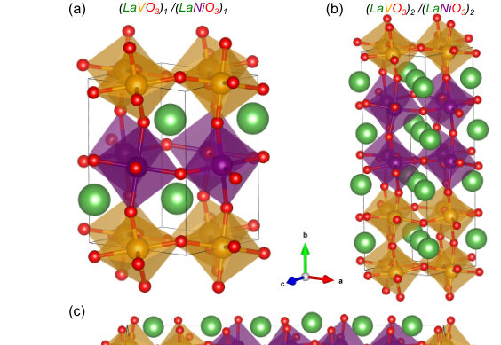
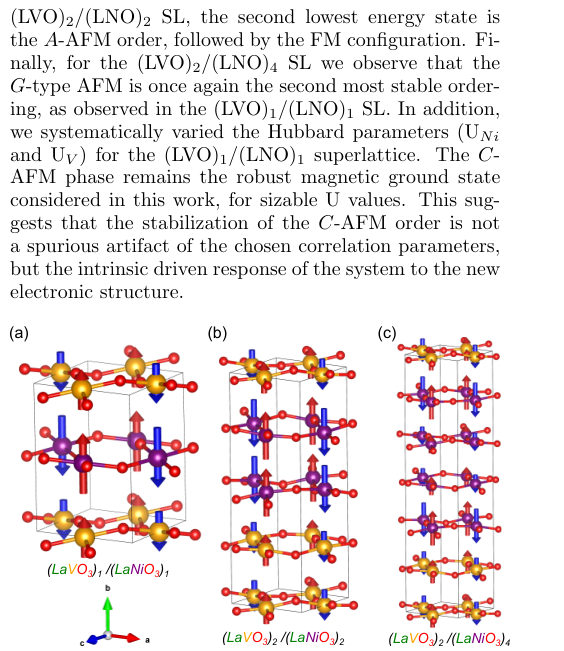
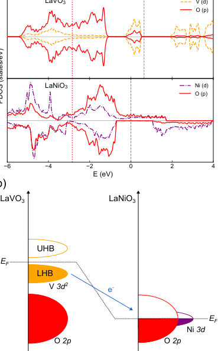
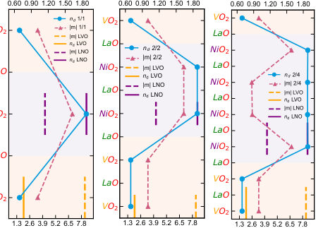
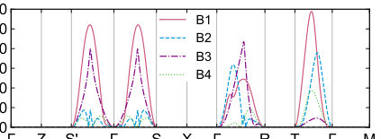
Summary. This theoretical study demonstrates that altermagnetism can be engineered in $( ext{LaVO}_3)_n/( ext{LaNiO}_3)_m$ superlattices. The mechanism hinges on interfacial charge transfer, which stabilizes a specific magnetic order, and the resulting spin splitting is dictated by the crystal's nonsymmorphic structural symmetries. This establishes charge transfer as a key design principle for next-generation magnetic materials.
Why it may be interesting. The concept of engineered magnetism via interfacial charge transfer and symmetry constraints provides a powerful theoretical design principle for realizing exotic quantum magnetic states in artificial heterostructures.
Detailed structure
Main problem. The paper investigates the emergence of altermagnetism in oxide superlattices by elucidating the role of interfacial charge transfer and octahedral tilts.
Main result. Altermagnetism is predicted to emerge due to the interplay of charge transfer (driving V$^{4+}$ and Ni$^{2+}$ states) and structural symmetries, resulting in a momentum-dependent d-wave spin splitting.
Method. First-principles calculations using DFT+U, combined with symmetry analysis and Wannier function modeling to determine the form factor of the spin splitting.
Model / system. The study focuses on $( ext{LaVO}_3)_n/( ext{LaNiO}_3)_m$ superlattices, modeling the electronic structure and magnetic ordering within the context of correlated transition metal oxides.
Key observables. Momentum-dependent spin splitting ($\Delta E(\mathbf{k})$), magnetic ground state (C-AFM), and charge transfer magnitude ($\Delta \epsilon_p$).
Important parameters / regimes. The spin splitting reaches $\sim 118 ext{ meV}$ in the ultrathin $( ext{LVO})_1/( ext{LNO})_1$ superlattice.
Assumptions / limitations. The calculations rely on the DFT+U approximation for correlation effects, and the analysis of the spin splitting uses a second-order Taylor expansion near the $\Gamma$ point.
Figures summary. Figures illustrate relaxed crystal structures, magnetic stability comparisons, projected density of states showing charge transfer, and band structures confirming the momentum-dependent splitting.
Paper structure. The work proceeds by first establishing the structural and magnetic ground state (C-AFM) via energy minimization, then quantifying the charge transfer mechanism, and finally using symmetry analysis to derive the specific d-wave form factor for the momentum-dependent spin splitting.
Abstract
Using first-principles calculations, we show that altermagnetism emerges in (LaVO$_3$)$_n$/(LaNiO$_3$)$_m$ superlattices, with $(n,m) = (1,1), (2,2)$ and $(2,4)$, from the interplay of interfacial charge transfer and octahedral tilts. Charge transfer drives the system towards the V$^{4+}$ and Ni$^{2+}$ configuration, turning the otherwise paramagnetic nickelate layers into a magnetically active sublattice. The resulting $C$-type antiferromagnetic order, combined with $a^-b^+c^-$ or $a^-b^-c^-$ octahedral tilts, links opposite-spin sublattices only through nonsymmorphic operations, yielding a $d$-wave spin splitting without spin-orbit coupling. Within DFT+U, the splitting reaches 118 meV in the insulating (LVO)$_1$/(LNO)$_1$ superlattice, about twice that calculated for bulk LaVO$_3$, and decreases as the nickelate layers become thicker. Our findings indicate that this splitting is hosted by both the V and Ni sublattices, with nearly half of its weight on oxygen $2p$ states through $p$-$d$ covalency. Interfacial charge transfer thus emerges as a \textit{design} principle for engineering altermagnetism in oxide heterostructures.
Localization Contrast As a Fundamental Limit of Radiative Quantum Efficiency
Authors: Arsineh Apelian, Tanay Tak, Xuance Jiang, Tsung-Yin Tsai, James S. Speck, Vojtech Vlcek
Type: theory · Category: disordered systems and neural networks · PDF: https://arxiv.org/pdf/2610.30741v1
Analysis basis: full PDF text, analyzed in chunks

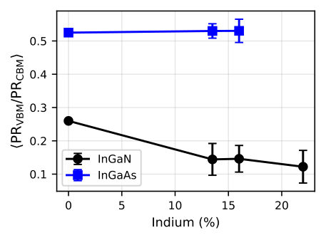
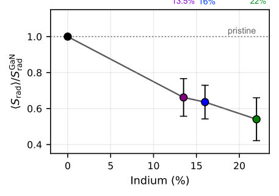
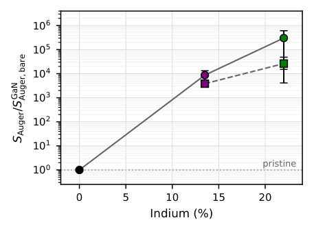
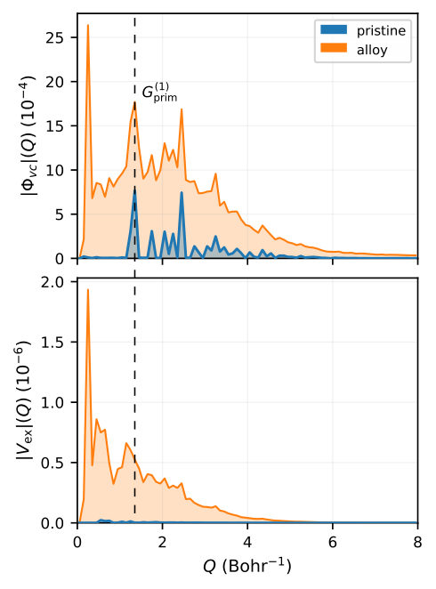
Summary. This paper demonstrates that disorder in semiconductor alloys like InGaN creates a 'localization contrast' between valence and conduction bands. This contrast suppresses the desirable radiative recombination pathway but, counterintuitively, dramatically enhances the non-radiative Auger recombination pathway. The findings establish localization contrast as a key mechanism controlling optical and carrier-carrier interactions in disordered semiconductors.
Why it may be interesting. The work provides a quantitative, microscopic link between structural disorder (localization contrast) and the competition between fundamental optical processes (radiative vs. Auger), which is crucial for understanding efficiency droop in modern optoelectronic devices.
Detailed structure
Main problem. The paper investigates how the 'localization contrast'—the differing degrees of localization between valence and conduction band states due to disorder—affects competing carrier recombination channels in semiconductors.
Main result. Localization contrast suppresses radiative recombination by reducing the interband optical momentum matrix element, but it dramatically enhances Auger recombination by breaking translational symmetry and generating low-Q components.
Method. The study uses first-principles calculations on random supercells to calculate recombination rates via momentum and Coulomb matrix elements, quantifying localization using the Participation Ratio (PR).
Model / system. The system modeled is random In_xGa_{1-x}N alloys, relevant for LEDs. The analysis compares radiative recombination (governed by the momentum matrix element) against Auger-Meitner recombination (governed by Coulomb interactions).
Key observables. Localization Contrast ($\langle ext{PR}_{ ext{VBM}} / ext{PR}_{ ext{CBM}} angle$), Radiative Strength ($\langle S_{ ext{rad}} angle$), and Auger Recombination Strength ($\langle S_{ ext{Auger}} angle$).
Important parameters / regimes. In content ($x$), disorder strength, and the ratio of localization between VBM and CBM.
Assumptions / limitations. The analysis relies on mean-field treatments using single-particle orbitals and assumes that the contrasting response of the momentum and Coulomb operators to disorder dictates the recombination efficiency.
Figures summary. Figure 1 compares the localization contrast ratio in InGaN (decreasing) versus InGaAs (constant). Figure 2 shows the reduction in radiative strength with In content, while Figure 3 and 4 detail the large enhancement of Auger strength due to disorder.
Paper structure. The paper first establishes the concept of localization contrast in InGaN. It then analyzes the effect of this contrast on radiative recombination, showing suppression. Subsequently, it analyzes Auger recombination, demonstrating that disorder enhances this channel far more significantly than the radiative channel.
Abstract
Disorder can localize valence- and conduction-band states to different degrees, yet whether such localization contrast has observable consequences remains poorly understood. Here, we show that localization contrast strongly impacts competing carrier-recombination channels. We illustrate this behavior in random In$_x$Ga$_{1-x}$N alloys. Increasing the In content from $x=13.5\%$ to $x=22\%$ progressively localizes the valence-band maximum state while leaving the conduction-band minimum state comparatively delocalized. This contrasting localization decreases the interband optical momentum matrix element underlying radiative recombination. For Auger-Meitner recombination, however, localization alone does not determine the coupling; atomic-scale disorder also breaks primitive-cell translational symmetry and modifies the momentum-space and phase structure of the states. This generates additional low-$Q$ components and enhances the Auger coupling by more than five orders of magnitude relative to pristine GaN. Thus, we provide a microscopic explanation for the competing trends in radiative and Auger recombination. More broadly, our results establish localization contrast as a mechanism through which disorder can control optical and carrier-carrier interactions in semiconductors.
Monodromy Defects of 3D Wilson-Fisher Criticality on the Fuzzy Sphere
Authors: Yin Tang, W. Zhu
Type: theory · Category: statistical mechanics · PDF: https://arxiv.org/pdf/2610.31269v1
Analysis basis: full PDF text, analyzed in chunks
Summary. This paper develops a systematic, non-perturbative method using the fuzzy-sphere regularization to study monodromy line defects in 3D critical systems. By threading a specific Aharonov-Bohm flux, the authors calculate the defect spectrum for various CFTs, concluding that these defects are stable against symmetry-preserving relevant perturbations.
Why it may be interesting. The work provides a systematic, non-perturbative method to study defect stability and interactions in critical systems, which is highly relevant for understanding phase transitions in condensed matter systems.
Detailed structure
Main problem. The primary goal is to characterize the interacting dynamics of monodromy (twist) line defects, which are non-trivial conformal defects in 3D critical systems.
Main result. The study found no relevant scalar perturbation among the low-lying defect primaries that preserves all symmetries, suggesting these monodromy defects are stable against symmetry-preserving relevant perturbations.
Method. The authors use the fuzzy-sphere regularization to model the defect boundary conditions by threading a symmetry-selective Aharonov-Bohm flux, allowing for the extraction of the defect spectrum and OPE coefficients.
Model / system. The analysis is applied to 3D Wilson-Fisher Criticality, specifically examining the $\mathbb{Z}_2$ twist of the 3D Ising CFT, the $\pi$-twist of the 3D O(2) CFT, and three inequivalent monodromies of O(3).
Key observables. Low-lying defect spectrum, bulk-to-defect and defect-defect operator product expansion (OPE) coefficients, and scaling dimensions ($\hat{\Delta}$).
Important parameters / regimes. The symmetry flux threading the poles of the fuzzy sphere acts as a tunable knob for the regularization.
Assumptions / limitations. The fuzzy-sphere regularization is assumed to provide an exact realization of the required monodromy boundary conditions.
Figures summary. Figures illustrate the defect geometry (e.g., $D_g$ as a boundary of $U_g$) and the intersection of the topological surface with a time slice along a meridian.
Paper structure. The paper first introduces the physical problem of characterizing defect dynamics, then details the fuzzy-sphere construction using Aharonov-Bohm flux, and finally applies this framework to calculate and analyze the defect spectrum and stability for specific CFTs (Ising, O(2), O(3)).
Abstract
Monodromy (twist) line defects arise as the boundaries of topological symmetry surfaces, which are among the simplest non-trivial conformal defects with direct realizations as magnetic vortex in quantum magnets, as Wilson and t Hooft lines of gauge theories, and as the replica twist operators in quantum information theory. However, their interacting dynamics remains difficult to characterize non-perturbatively. Here we design a way to realize the monodromy boundary conditions in the fuzzy-sphere regularization by threading a symmetry-selective Aharonov-Bohm flux through the two poles of the sphere. We apply this construction to the $\mathbb{Z}_2$ twist of the 3D Ising conformal field theory (CFT), $π$-twist of the 3D O(2) CFT and three inequivalent monodromies of O(3) (centre twist, z-axis $π$-twist and the reflection). For each defect, we extract the low-lying defect spectrum together with bulk-to-defect and defect-defect operator product expansion coefficients, which characterize the operators living on the defect line, their mutual interactions, and how they couple to the surrounding critical bulk. Among the low-lying defect primaries resolved in our spectra, we find no relevant scalar perturbation that preserves all the symmetries of the corresponding defect. The relevant deformations identified in our calculations break at least one preserved symmetry, providing evidence that these monodromy defects are stable against symmetry-preserving relevant perturbations. These results establish a systematic set of non-perturbative conformal data for monodromy defects beyond the Ising twist. Our construction therefore turns the symmetry flux into a tunable knob of the fuzzy-sphere regularization, opening a route to exploring the response of critical matter to distinct defects.
The limits of magic-state distillation
Authors: Llorenç Balada Gaggioli, Jakub Mareček
Type: theory · Category: quantum information and computing · PDF: https://arxiv.org/pdf/2610.31115v1
Analysis basis: full PDF text, analyzed in chunks
Summary. This work rigorously analyzes the resource cost of magic-state distillation, a critical component of fault-tolerant quantum computing. By proving that complex protocols are reducible to simple code projections, the authors establish tight lower and upper bounds on the number of noisy inputs required. The results provide concrete, optimal factory sizes for distilling key non-Clifford resources like the T state.
Why it may be interesting. While focused on abstract quantum computation, the rigorous mathematical bounding of resource costs (like magic states) is foundational to understanding the feasibility limits of quantum simulation and computation.
Detailed structure
Main problem. The paper determines the minimum number of noisy magic states required to distill a target state with a specified error suppression order in fault-tolerant quantum computation.
Main result. It establishes that for quadratic distillation of a T state, exactly nine inputs are needed, and the eight-input CCZ factory is optimal for this case.
Method. The authors use theoretical reductions showing that any protocol is equivalent to a projection onto a single stabilizer code, combined with exhaustive searches and combinatorial methods.
Model / system. The context is fault-tolerant quantum computing, specifically the resource cost associated with generating non-Clifford magic states (like T states) needed for universal quantum computation.
Key observables. Minimum required inputs ($n_{\min}$), suppression order ($d$), and the fidelity/error rate of the distilled state.
Important parameters / regimes. The error rate ($p$), the suppression order ($d$), and the target state type ($ au$, e.g., T, CCZ).
Assumptions / limitations. The analysis assumes ideal Clifford operations and focuses on protocols that tolerate input faults up to a certain order.
Figures summary. Figures illustrate distillation protocols as stabilizer codes, mapping fault patterns relative to code projections, and tables compare minimum required inputs across various targets and orders.
Paper structure. The paper progresses by first establishing theoretical limitations on protocols, then performing explicit searches and constructions for specific targets (T, CCZ), and finally deriving general lower bounds based on code theory.
Abstract
Magic-state factories are a major cost of fault-tolerant quantum computing, yet how few noisy inputs they need is known only for restricted protocols. We show that, for tolerating input faults, any stabilizer protocol, however adaptive, postselected or multistage, is no better than a projection onto one stabilizer code, and that for rational targets a fault pattern is harmful exactly when its complement is. Searches over all codes show that quadratic distillation of one T state needs exactly nine inputs and that the eight-input CCZ factory is optimal. At order $d$, one T state needs $n\geq2d$.
The often overlooked role of sound in liquid thermal transport
Authors: Kamran Behnia
Type: theory · Category: statistical mechanics · PDF: https://arxiv.org/pdf/2610.31127v1
Analysis basis: full PDF text, analyzed in chunks

Summary. This paper re-examines the Bridgman formula, which links thermal conductivity in liquids to the sound velocity, arguing that this relationship is conceptually significant but underappreciated. It develops a theoretical framework showing that heat transport in liquids is dominated by collective, sound-like excitations, providing a unified view across gas, liquid, and solid phases, including quantum liquids.
Why it may be interesting. The connection drawn between macroscopic transport coefficients ($\kappa$) and fundamental hydrodynamic equations, particularly the role of sound waves, provides a powerful, unifying theoretical lens applicable to many-body dynamics in dense quantum systems.
Detailed structure
Main problem. The paper reviews the often overlooked role of sound in liquid thermal transport, revisiting the empirical Bridgman formula and its conceptual implications.
Main result. The Bridgman formula provides a surprisingly good estimate for the thermal diffusivity in liquids, suggesting that heat transport is governed by collective, sound-like excitations even across phase transitions.
Method. The analysis combines derivations from hydrodynamic Euler equations, comparison with solid-state phonon theory, and modeling of quantum liquid behavior.
Model / system. The study focuses on the thermal transport ($\kappa$ and $D$) in various states of matter, including simple liquids (like Argon), supercritical water, and quantum liquids ($ ext{He}^3$, $ ext{He}^4$).
Key observables. Thermal conductivity ($\kappa$), sound velocity ($v_s$), thermal diffusivity ($D$), and the structure factor $S(Q)$.
Important parameters / regimes. Temperature ($T$), particle density ($n$), and the ratio of sound velocity to characteristic length scale ($v_s/d$).
Assumptions / limitations. The derivation assumes local thermal equilibrium is restored after an acoustic transit, and it compares the liquid behavior to the Mott-Ioffe-Regel limit.
Figures summary. Figures illustrate the structure factor $S(Q)$ and radial distribution function $g(r)$ for liquid argon, and show the temperature dependence of thermal diffusivity $D$ for water across solid, liquid, and supercritical phases.
Paper structure. The paper progresses by establishing the empirical Bridgman formula, deriving its origin from hydrodynamics, comparing it to solid/gas transport mechanisms, and finally applying the framework to quantum liquids to model the crossover between particle and collective transport.
Abstract
Formulated a hundred years ago, the Bridgman formula for thermal conductivity of liquids postulates a proportionality between sound velocity and thermal conductivity. This designates phonons as heat carriers in a liquid. Its empirical success has been under-appreciated and its conceptual implications overlooked. It is not mentioned in well-known condensed-matter textbook. Here, we review its origin, its links to hydrodynamic Euler equations and to the fundamental paradox surrounding the parabolic heat equation and its fate across the quantum-classical crossover.